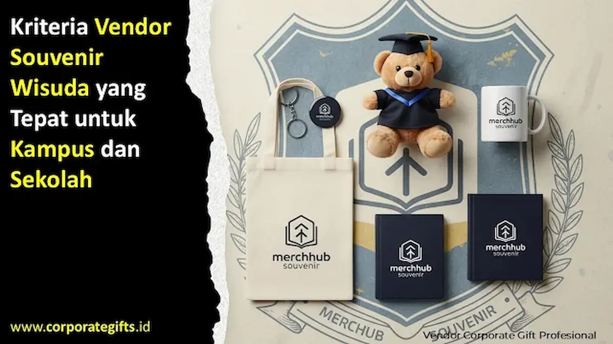

Corporate Gifts ID - Memilih vendor souvenir wisuda yang tepat sangat penting untuk menyukseskan acara kelulusan di kampus maupun sekolah. Kriteria utama vendor souvenir wisuda yang profesional meliputi reputasi dan pengalaman terpercaya, kualitas produk yang konsisten, ketersediaan layanan custom branding, ketepatan waktu produksi, serta penawaran harga yang sepadan. Memperhatikan elemen-elemen ini akan memastikan kenang-kenangan yang diberikan benar-benar berkualitas dan berkesan bagi para wisudawan.
Barang kenang-kenangan ini bukan sekadar hadiah seremonial, melainkan simbol penghargaan dan kebanggaan atas perjuangan panjang para lulusan dalam menyelesaikan studi mereka. Oleh sebab itu, proses kurasi vendor pengadaan cinderamata tidak boleh dilakukan sembarangan agar seluruh rangkaian acara kelulusan berjalan khidmat tanpa hambatan teknis.
Poin Kunci Evaluasi Vendor Wisuda:
- Portofolio Institusional: Vendor wajib memiliki rekam jejak pengadaan cinderamata untuk universitas, fakultas, atau sekolah terkemuka.
- Uji Sampel Fisik (Proofing): Ketersediaan dummy atau prototipe produk sebelum tahap produksi massal untuk mencegah deviasi warna dan dimensi.
- Presisi Branding: Kemampuan teknis cetak grafir laser pada kayu/logam, sablon DTF, atau cetak UV flatbed pada plakat kristal akrilik.
- Jaminan Ketepatan Waktu: SLA pengerjaan terjadwal dengan penalti keterlambatan demi keamanan jadwal seremonial toga.
- Layanan Purna Jual Bertanggung Jawab: Kebijakan penggantian barang rusak atau cacat produksi tanpa biaya tambahan bagi panitia.
Mengapa Memilih Vendor Souvenir Wisuda Tidak Boleh Sembarangan?
Wisuda merupakan seremonial sakral sekali seumur hidup bagi mahasiswa dan orang tua mereka. Setiap detail fisik yang dibawa pulang oleh wisudawan, mulai dari tabung ijazah, plakat akrilik, hingga gift set kelulusan, merefleksikan martabat akademik dan citra kelembagaan kampus. Kesalahan dalam memilih vendor, seperti plakat yang pecah, logo buram, atau pengiriman terlambat, dapat merusak reputasi acara yang telah dipersiapkan berbulan-bulan.
1. Reputasi dan Pengalaman Teruji Vendor
Langkah pertama yang wajib diperiksa oleh panitia dies natalis atau wisuda adalah reputasi vendor di industri pengadaan. Vendor berpengalaman memahami dinamika birokrasi kampus, kebutuhan administrasi faktur pajak pengadaan pemerintah (LPSE/SIPLah), serta standar kemasan untuk ribuan lulusan.
Sebelum menerbitkan Surat Perintah Kerja (SPK), panitia disarankan memverifikasi ulasan klien terdahulu, meninjau katalog portofolio pengadaan seragam, serta memastikan vendor memiliki kantor fisik dan fasilitas produksi yang jelas. Hal ini memastikan transaksi berjalan aman dan bebas risiko penipuan.

Pengecekan kualitas bahan plakat, akrilik, dan cetak logo kampus pada souvenir wisuda.
2. Kualitas Fisik Produk yang Konsisten
Souvenir kelulusan dirancang untuk dipajang bertahun-tahun di ruang tamu atau meja kerja wisudawan. Oleh sebab itu, ketahanan material menjadi parameter mutlak. Vendor terpilih harus menjamin bahan tidak mudah pudar, tidak berbau kimia tajam, dan memiliki potongan sudut yang rapi.
Vendor souvenir profesional selalu menyediakan sampel fisik (dummy produk) sebelum proses cetak massal dijalankan. Panitia dapat mengecek langsung ketebalan akrilik, kerapian grafir laser, kehalusan tepian kayu plakat, serta akurasi warna logo universitas sesuai pedoman Corporate Identity (CI) kampus.
3. Ketersediaan Layanan Custom Logo dan Kemasan Eksklusif
Setiap fakultas dan program studi umumnya memiliki warna identitas dan simbol keilmuan yang unik. Pastikan vendor memiliki tim grafis internal yang mampu mengadaptasi logo resolusi tinggi, mengintegrasikan nomor induk mahasiswa (NIM), atau mencetak nama wisudawan secara personal pada plakat.
Selain produk utama, kemasan box beludru atau hardbox berpita emas dengan hot-print foil emas sangat menentukan kemewahan cinderamata saat diserahkan di atas podium wisuda.
4. Ketepatan Waktu dan Disiplin Jadwal Produksi
Dalam seremoni akbar seperti wisuda, toleransi keterlambatan adalah nol persen. Souvenir harus sudah tiba di gedung serbaguna setidaknya 3 hingga 5 hari sebelum gladi resik dilaksanakan untuk disortir berdasarkan fakultas.
Vendor yang kredibel akan memberikan jadwal kerja komprehensif (timeline sheet), mulai dari deadline persetujuan mockup digital, proses perakitan, kontrol mutu (QC), hingga estimasi lama transit ekspedisi logistik. Transparansi proses produksi menjauhkan panitia dari kepanikan menjelang hari H.
5. Fleksibilitas Struktur Harga dan Transparansi Biaya
Efisiensi anggaran wisuda memerlukan vendor yang menawarkan struktur harga berjenjang (tier pricing) yang kompetitif untuk kuota pesanan skala ratusan hingga ribuan pcs.
Hindari vendor yang menyembunyikan biaya tambahan di akhir proyek, seperti biaya pembuatan cetakan (moulding fee), biaya packaging tambahan, atau ongkos kirim tak terduga. Vendor terpercaya menyajikan surat penawaran harga resmi (RAB) yang transparan dan mencakup seluruh komponen biaya dari awal.
6. Kemampuan Membandingkan Vendor Secara Objektif
Panitia pengadaan kampus sangat disarankan mengumpulkan sedikitnya tiga proposal penawaran dari vendor berbeda untuk dibandingkan secara head-to-head. Evaluasi tidak hanya terpaku pada nominal rupiah termurah, melainkan mempertimbangkan rasio nilai investasi (value for money):
- Ketebalan bahan baku (misal akrilik 8 mm vs 5 mm).
- Teknologi cetak (grafir mesin laser presisi vs stiker tempel biasa).
- Kelengkapan kemasan pelindung (hardbox satin mewah vs kardus polos).
7. Garansi Produk dan Layanan Purna Jual (After-Sales)
Inilah kriteria pembeda utama antara vendor profesional dengan calo perantara (broker). Vendor bertanggung jawab selalu menyertakan garansi penggantian 100 persen untuk unit yang cacat cetak, gores, atau rusak akibat proses transit pengiriman.
Penyediaan stok cadangan ekstra (spare stock 1 - 2 persen) dari vendor tanpa biaya tambahan menjadi nilai plus luar biasa untuk mengantisipasi adanya penambahan wisudawan susulan di menit-menit terakhir.
Matriks Evaluasi Komparatif Vendor Wisuda
Gunakan matriks perbandingan berikut untuk membantu tim pengadaan institusi dalam menentukan mitra kerja sama yang tepat:
| Parameter Evaluasi | Vendor Amatir / Reseller | Vendor Terpercaya (CorporateGifts.ID) |
|---|---|---|
| Legalitas & Pajak | Perorangan tanpa faktur pajak | Badan usaha resmi, terdaftar LPSE & terbitkan faktur |
| Sampel Dummy Produk | Hanya foto katalog digital | Dibuatkan sampel fisik sebelum produksi massal |
| Personalisasi Data | Hanya cetak logo seragam | Custom nama wisudawan, gelar, NIM, & kemasan velvet |
| Jaminan Timeline | Estimasi lisan tanpa komitmen tertulis | SLA tertulis dengan jaminan ketepatan jadwal tiba |
| Layanan Purna Jual | Lepas tangan setelah paket terkirim | Garansi retur ganti baru untuk produk cacat produksi |
FAQ Kriteria Vendor Souvenir Wisuda
Kesimpulan
Memilih vendor souvenir wisuda adalah investasi pada citra profesional dan kebanggaan almamater kampus atau sekolah. Dengan menerapkan kriteria pemilihan berbasis reputasi, kualitas produk, fleksibilitas custom desain, ketepatan waktu, dan layanan purna jual, panitia dapat menghadirkan momen kelulusan yang elegan, bermakna, dan berkesan bagi seluruh wisudawan beserta keluarga tercinta.
Ingin memastikan cinderamata wisuda institusi Anda digarap dengan standar mutu terbaik? Hubungi tim kurator Corporate Gifts ID untuk konsultasi konsep plakat, mock-up gratis, serta katalog cinderamata wisuda eksklusif.